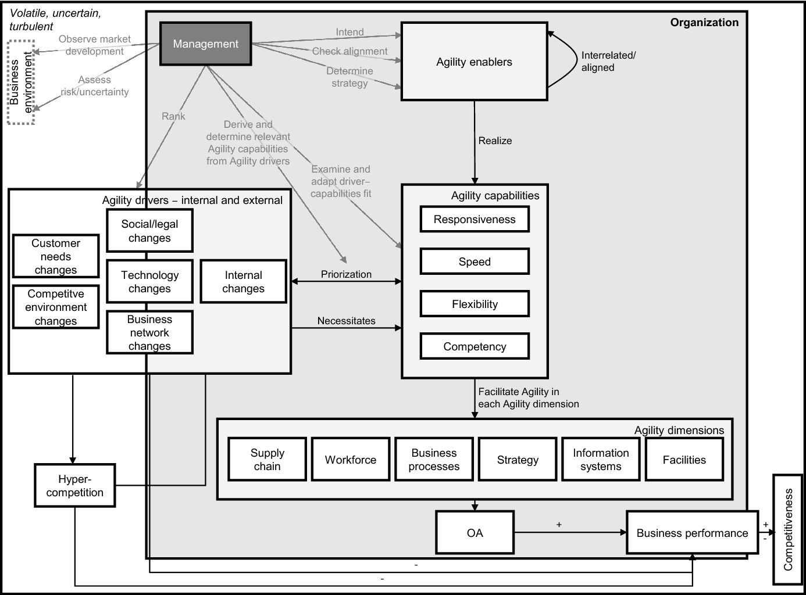

3 Developing Dynamic Capabilities for Change and Agility
3.1 Measuring Change
The Changing Room Illusion
3.2 Measuring a growth mindset
Principal Component Analysis with Varimax Rotation
| Statement | Attitude towards empowered self-guidance | Attitude towards customer co-creation | Attitude towards learning spirit | Attitude towards collaborative exchange |
|---|---|---|---|---|
| I can decide for myself how I achieve a work goal. | 0.71 | |||
| I am good at organizing myself. | 0.63 | |||
| I learn new skills that help me handle changes. | 0.59 | 0.48 | ||
| I use mistakes as a chance for me to adjust my approach. | 0.58 | 0.37 | ||
| I have the courage to take on new tasks for which I do not yet know all the requirements. | 0.58 | |||
| I adjust to changes. | 0.54 | 0.37 | ||
| Through direct conversation, I try to find out what my customer needs. | 0.79 | |||
| I talk to my customers regularly. | 0.76 | |||
| I try to find out what is most important for the customer. | 0.67 | 0.45 | ||
| While working, I frequently think about how my job helps customers. | 0.63 | |||
| I try to reach my goals by satisfying customers. | 0.60 | |||
| I come up with new ideas to better complete my tasks. | 0.72 | |||
| I like exchanging views with others about the challenges of reaching our goal. | 0.71 | |||
| It is important to me to always learn something new. | 0.66 | |||
| I enjoy exploring new situations. | 0.57 | |||
| I solve difficult challenges best when I work together with others in a team. | 0.76 | |||
| I like making my work transparent for others. | 0.63 | |||
| I appreciate the different perspectives within my team. | 0.60 | |||
| I like supporting other people in my team. | 0.52 | 0.37 | ||
| I regularly review my approach with others. | 0.54 |
From: Eilers, Peters, and Leimeister (2022)
3.3 Build your future CV
What will be your path or paths towards the future versions of you?

